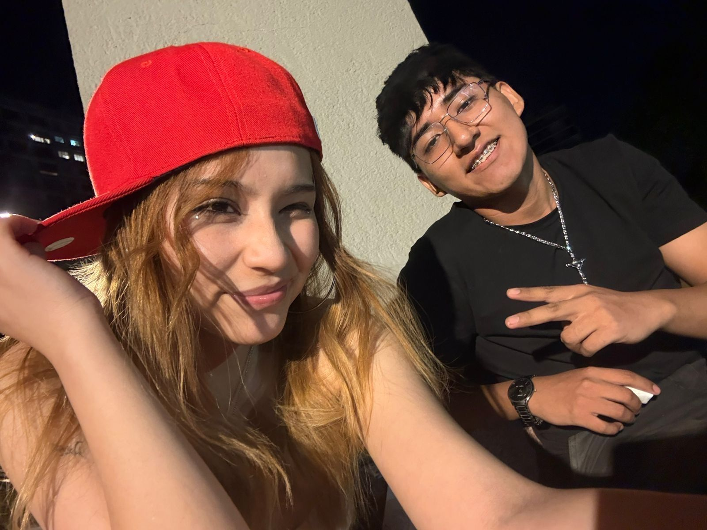
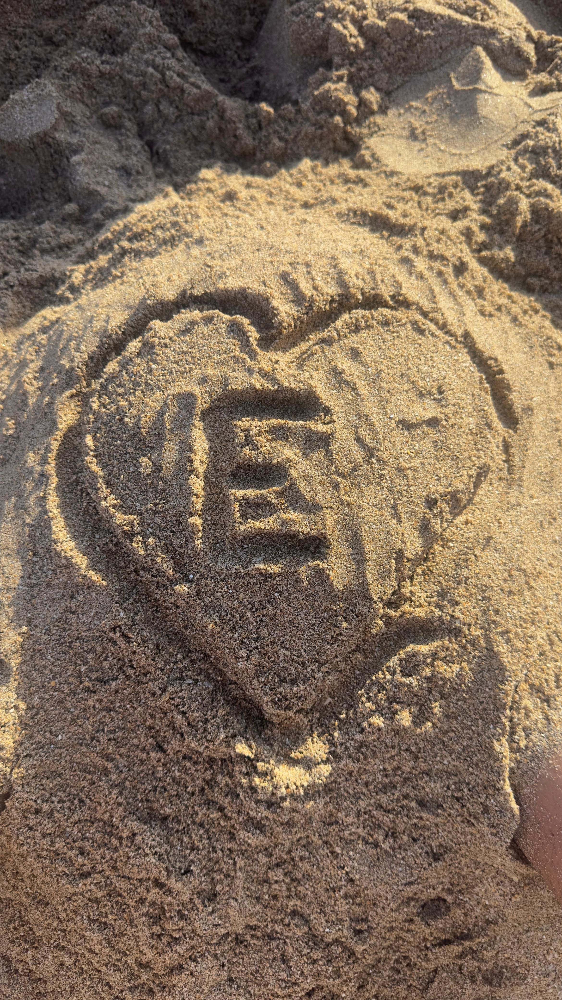
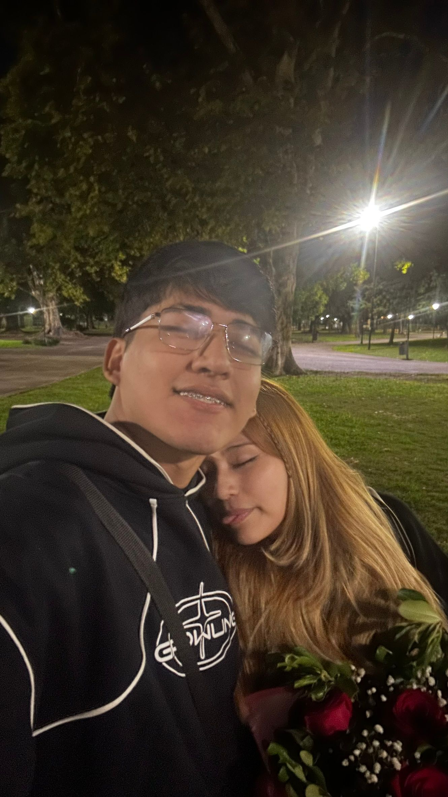

Evelin,
vos no apareciste en mi vida por accidente, si no como esas cosas que no se pueden ignorar. Te pienso todo el tiempo, hasta cuando deberia dormir. Quisiera que aparezcas hasta en mis sueños, para sentir que estoy con vos cuando me duermo. Me gusta tu forma de ser y tu forma de querer, por mas que duela a veces. Me encanta pasar el tiempo con vos, siempre me sacas una sonrisa por mas que este triste o cansado. Sabes como alegrarme la tarde o el dia completo (aunque muy dificil no la tenes, simplemente tengo que verte).
Valoro mucho todo esto que nos esta pasando, sabia que no iba a ser facil pero tambien sabia que iba a valer la pena, y la verdad que si lo esta valiendo, demostraste en tan poco tiempo lo mucho que me quieres como yo te quiero. Una vez te dije que para mí, un te amo significa mucho, porque es algo que nunca habia sentido. Pero tengo ganas de decirtelo cada mañana que me levanto y ahi comprendo lo mucho que significas en mi vida. Solo te pido lealtad y paciencia porque todo esto es nuevo para mí, trato de ser mejor cada día. Siempre fui yo y solo yo, pero ahora que te tengo, somos vos y yo...
Te amo. 💙
Con todo mi amor,
Santi